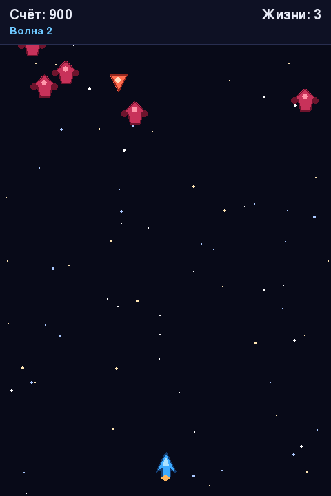

Как появляются враги
Таймер появления в секундах — с тем же while-накопителем, что и таймер анимации в главе 20.
В разделе 21.3 мы уже измеряли время до следующего врага в секундах: таймер уменьшался на
dt каждый кадр, а при срабатывании прибавлял интервал заново, а не
присваивал его — так остаток не терялся. Теперь перенесём тот же принцип в финальную
архитектуру игры и сделаем таймер пригодным для интервала, который меняется вместе со
сложностью.
self.spawn_timer -= dt
while self.spawn_timer <= 0.0:
self._spawn_enemy()
self.spawn_timer += interval_poyavleniya_vraga(self.score)self.spawn_timer += interval_poyavleniya_vraga(self.score) — то, что нужно на каждом кадре: остаток времени сверх интервала не выбрасывается, а переносится на следующего врага, точно так же, как в разделе 21.3 и как таймер анимации в разделе 20.23. Это сохранение остатка работает и с обычным if — оно не требует while. Сам while нужен для другого: если бы один обрабатываемый шаг длился дольше сразу нескольких интервалов появления врагов, он честно создал бы несколько врагов подряд за один вызов, а if продвинул бы появление только одного врага и молча потерял остальное накопленное время.dt значением MAX_DT = 0.05 секунды перед каждым обновлением (защита от скачка после паузы отладчика или зависания ОС), а нижняя граница интервала появления врагов — MIN_SPAWN_INTERVAL = 0.35 секунды: даже самый долгий допустимый кадр короче любого возможного интервала между врагами. Значит, тело while в этой игре сейчас никогда не выполняется больше одного раза за кадр — и написанный через if код вёл бы себя здесь ровно так же. while оставлен как более общий и надёжный приём: он не сломается, если позже поднять MAX_DT или уменьшить интервал появления врагов сильнее, чем сейчас, а if в этом случае пришлось бы менять.Где именно появляется враг
Координата X должна гарантировать, что враг полностью помещается внутри игрового поля — без частичного «обрезания» по краю:
def x_poyavleniya_vraga(rng, shirina_vraga, pole):
levaya, pravaya = pole.left, pole.right - shirina_vraga
if pravaya <= levaya:
return float(levaya)
return rng.uniform(levaya, pravaya)Это отдельная, чистая функция — принимает rng явным аргументом
(раздел 21.24 объясняет, зачем), а не обращается к глобальному random
напрямую, поэтому её удобно тестировать без запуска всей игры.
Два типа врагов

| Scout (разведчик) | Fighter (истребитель) | |
|---|---|---|
| Скорость | Выше | Ниже |
| Размер | Меньше | Больше |
| Очки за уничтожение | 100 | 200 |
| Вероятность появления | Выше в начале игры | Растёт вместе со счётом (раздел 21.17) |
@dataclass(frozen=True)
class EnemySpec:
name: str
base_speed: float
points: int
image_key: str
ENEMY_SPECS = {
"scout": EnemySpec("scout", base_speed=150.0, points=100, image_key="enemy_scout"),
"fighter": EnemySpec("fighter", base_speed=85.0, points=200, image_key="enemy_fighter"),
}@dataclass из главы 14 автоматически создаёт конструктор для четырёх полей. Параметр frozen=True запрещает менять эти поля после создания объекта: общая спецификация scout или fighter остаётся неизменной, а координаты и текущая скорость хранятся уже в каждом экземпляре Enemy. Чтобы добавить тип врага в упражнении 21.25, создайте новый EnemySpec, а не изменяйте существующий.